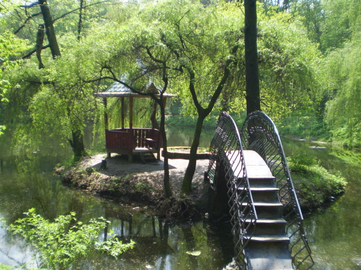

|
Программа тура
Выезд из Харькова в 08.00.
- Старый Мерчик - экскурсия по территории усадьбы Шидловских (XVIII век). До настоящего времени сохранились дворец, служебный корпус, два флигеля, амбар и ландшафтный парк. Рядом с усадьбой находится красивая церквушка солнечного цвета - храм Всех Святых.
- В селе Шаровка Богодуховского района расположена жемчужина Харьковской области - имение в готическом стиле (XIX век). Усадьба графа Кенига состоит из ландшафтного парка, дворца и множества служебных построек, примечательных необычайностью архитектуры.
- Усадьбу Натальевка, построенную над рекой Мерчик, сахарозаводчик И. Харитоненко назвал в честь своей младшей внучки. Сейчас это село Владимировка Краснокутского района. До настоящего времени сохранились спроектированная А. Щусевым церквушка – Спасо-Преображенский храм - и отдельные строения усадьбы - ворота, флигели, водонапорная башня... Главное здание не сохранилось.
- Краснокутский дендропарк - одно из уникальных и красивейших мест Украины. Основан 200 лет назад И.Н. Каразиным. Экзотические растения, пруды, древний монастырь, остров влюбленных и многое другое.
|

|
|
Возвращение в Харьков около 18.00.
В стоимость тура входит: проезд комфортабельным автобусом, сопровождение экскурсоводом по всему маршруту, входные билеты в дендропарк, страховка.
|
Переход на главную
Ознакомиться с ценами можно здесь
Вернуться к списку экскурсий
|